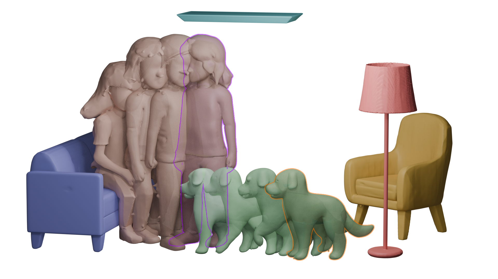
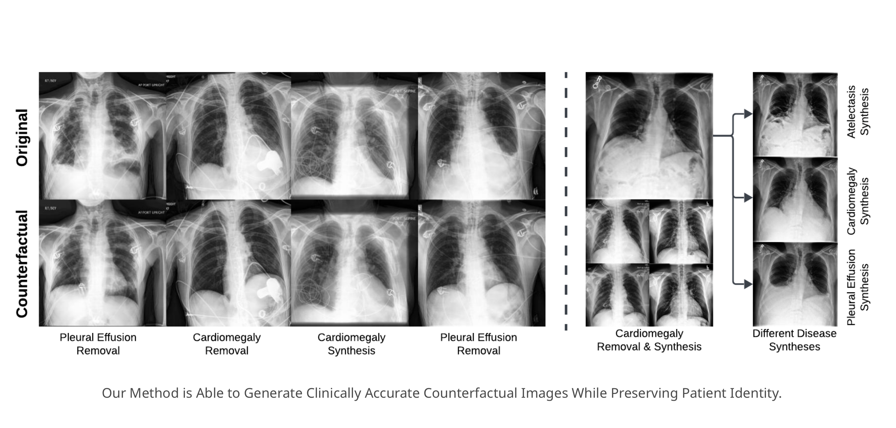
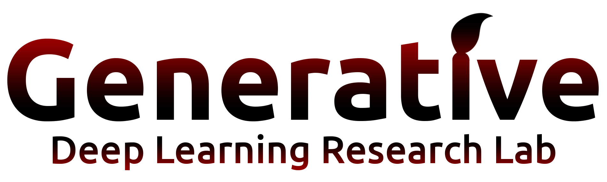
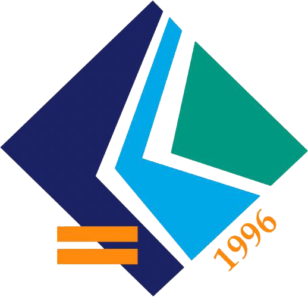

Generative Modeling & 3D Perception
I'm a researcher at INSAIT where I prototype controllable diffusion systems for human- and scene-centric understanding.
Previously at ETH Zürich's Computer Vision Lab and Bilkent's Deep Learning Lab, I build collaborative pipelines that push generative ideas into deployable products.
Publications
-

-
-
-
-

Experience
Roles
- INSAIT — Researcher · Aug 2025 – Present · Sofia
-
 ETH Zürich CVL — Research Intern · Jul 2024 – Nov 2024 · Zürich
ETH Zürich CVL — Research Intern · Jul 2024 – Nov 2024 · Zürich
-  Bilkent DLR — Undergraduate Researcher · Jan 2024 – Aug 2025 · Ankara
-
 Getir — Software Engineer · Sep 2022 – Jan 2024 · Istanbul
Getir — Software Engineer · Sep 2022 – Jan 2024 · Istanbul
- CMMRS — Visiting Student · Aug 2025 · Saarbrücken
Education
-
 Bilkent University — B.E. Computer Science · 2020 – 2025
Bilkent University — B.E. Computer Science · 2020 – 2025
-
 EPFL — Exchange, Computer Science · 2023 – 2024
EPFL — Exchange, Computer Science · 2023 – 2024
-  Çanakkale Özel Fen Lisesi — Math & Science Diploma